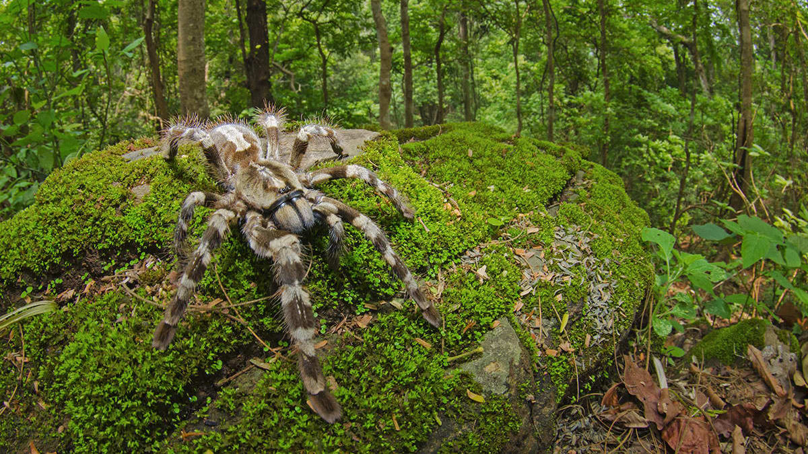
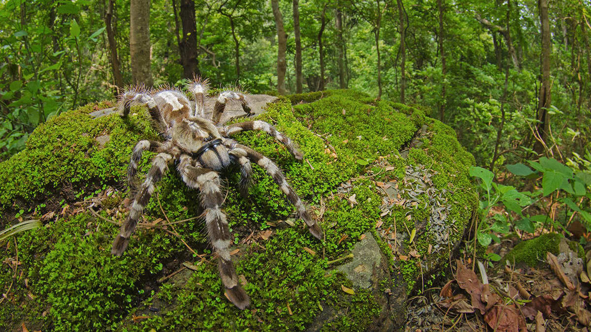
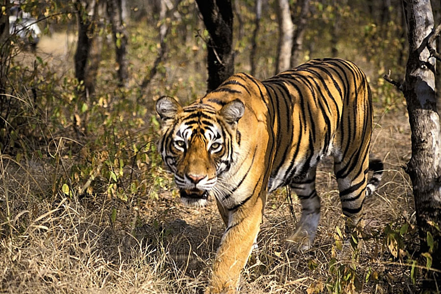
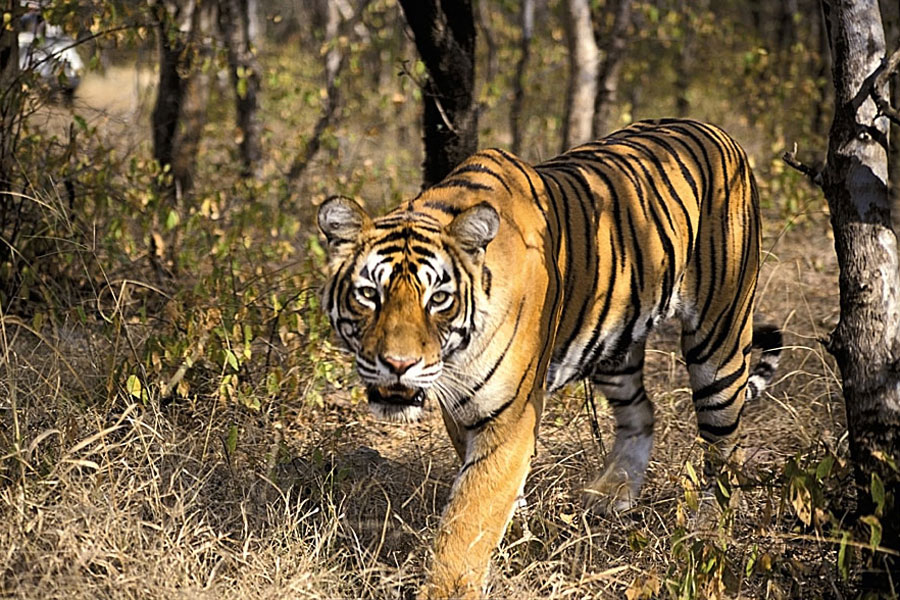
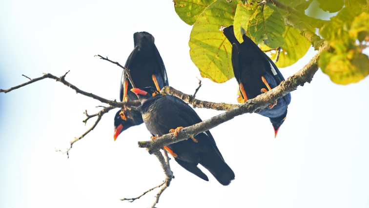
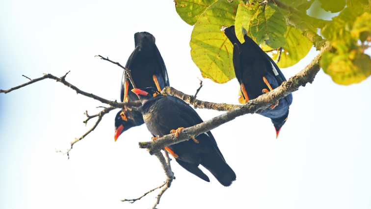

General Information
The name of Kanger Ghati National Park is derived from the Kangar river, which flows in its length. Kanger Valley is spread over 200 square kilometers.
Kanger Valley got the status of a national park in the year 1982. It is a friendly place for high mountains, deep valleys, giant trees and various species of wildlife.
Kanger Valley National Park is a typical mixed humid deciduous type of forest, in which the Sal, Saugaun, teak and bamboo trees are available in abundance. The most popular species in this area is Bastar Maina which enchant everyone with their human voice .
The state bird, Bastar Maina, is a type of Hill maina (gruncula Dhariosoa), which is capable of emulating the human voices. The forest is home to migrant and resident birds.
Apart from wildlife and plants, this National Park is home to three exceptional caves – famous for their amazing geological structures of Kutumbasar, Kailash and Dandak- Stellagmites and Stalactitees. National Park is known for the presence of underground limestone caves with dripstone and floston. The stalegmites and stalactite formation is still increasing. Caves in the National Park provides shelter for various species of wildlife. In the eastern part of the National Park, the Bhainsadhara is located where one can see the sandy beaches where crocodiles (crocodlus palestris) mostly found.
Tirathgarh Waterfall is located in Kanger Valley National Park. The Kenjhardhara and Bhainsadhara are famous for Crocodile Park. Gypsy Safari is available for tourists to explore the natural beauty of the park.
Flora and Fauna of Kanger Valley National Park
Flora
The flora in the park consists chiefly of mixed moist deciduous type of forests with predominance of sal, teak and bamboo trees. In fact, the Kanger Valley is the only region in the Peninsular India where one of the last pockets of virgin and untouched forests are still left.
According to the survey done by the Botanical Survey of India and other research organizations, the national park has 553 floral species out of which 12 species are new to Chhattisgarh; 43 species are reported rare.
Floral diversity includes in situ gene bank of medicinal plants, grasses, climbers, wild sugarcane, canes, ferns, epiphytes, Sal, teak, bamboo and their rich associates.
Flora
Major wildlife of the Kanger Valley National Park are tigers, leopards, mouse deer, wild cat, chital, sambar, barking deer, jackals, langurs, rhesus macaque, sloth bear, flying squirrel, wild boar, striped hyena, rabbits, pythons, cobra, crocodiles, monitor lizards and snakes. The avian fauna at the park includes hill myna, spotted owlet, red jungle fowl, racket-tailed drongos, peacocks, parrots, steppe eagles, red spurfowl, phakta, bhura teeter, tree pie and heron among many others.
A few tributaries form marshy land in early dry season due to natural seepage. Ekta Jhodi, Kyam nullah, Karanji Jhodi, Rajamunda, Punji Jhodi, Komkel Jhodi forms good marshy areas which are good habitat of wild boar and sloth bear. Chital, barking deer, and panther are mainly found in this marshy area. Kariya Ama Nallah is a perennial marshy belt and is ideal habitat for the wild boar, sloth bear, chital, leopard and tiger.
The fauna that have been recorded in the national park include:
- 49 species of mammals
- 144 species of birds
- 16 species of amphilibians
- 37 species of reptiles
- 56 species of fish
- 91 species of butterflies
- 26 species of moths
- 113 species of spiders
Temparature of Kanger valley
| SEASON |
TEMPRETURE |
| Winter |
30° maximum
3° minimum |
| Summer |
42° maximum
20° minimum |
| Rainfall |
Average 152 C.M.
(Generally 110 days annually) |
Human settlements in the park and adjoining areas
The national park comprises two ranges viz: Kotamsar and Koleng Ranges. The Kotamsar Range, forming the western half on the park is dotted with revenue villages on its boundary and there is hardly any forest area outside the park for fuel wood, small wood, bamboo and other non-timber forest produce. So the Zone of Influence (Zl) for people in this range is 10 km.
The Koleng Range forming the eastern half of the park has a lesser number of villages on its boundary and is comparatively free from biotic pressure. So in the central portion Zone of Influence is 10 km and on eastern boundary it is 5 km.
All together there are 48 villages within 5 km radius of national park boundary and only one forest village (Kotamsar) is inside the national park.
Geology, rock, soil and terrain
The national park has remarkable geological diversity. The national park has mainly Cuddapah group of rock formation and at some places Vindhyan group of rock formation, shales are the common rock formation of Cuddapah group, which are horizontally bedded, at many places calcareous, the other rock formation is slate.
In the northwestern part i.e. Tirathgarh, Kamanar, Kotamsar there is outcrop of limestone, sandstone, quartzite and laterites. In northern middle part form Nagalsar to Radhanaras at many places limestone is well exposed and outcrops of quartzite and laterites. limestone caves of Kotamsar, Dandak, Devgiri, and Kailash are present in this part. In the northeastern part from Pulcha to Kolab River, rock is shale and some quartzite with outcrops of granite.
In the southsestern part, rock is of vindhyan group mainly granite and sandstone. At few places granite and mica are also present. In the southern middle part, rock is of caddapah group of quartzite and granite. At many places mica schist are present. Shale and sandstone have also outcropped.
In the southeastern part, rock is primarily of cuddapah group of granite, shale, slate, sandstone and occasional quartzite outcrop. On slopes laterites are present. At some places vindhyan group of rock are also present.
Soil
Poor and rocky soil is found on the hill tops and slopes. Recent deposits are alluvial soils, high and low level laterites, and ferruginous conglomerates. The soils are yellowish-brown, brownish red, reddish and brown in colour and mostly residual in nature. These soils are loamy, sandy and lateritic in nature. The thickness of soil varies from 4 to 6 feet. The soil is slightly acidic with PH value ranging from 5.3 to 7.0.
Terrain
The park is Valley of Kanger River. The river flows from NW to SE direction centrally through deep gorges. Both sides of the valley are very steep and are associated with hill ranges. The entire park area is hilly. The eastern half portion is very hilly; the western half is comparatively less hilly. There are small plateaus interspersed with hills. The entire park is full of seasonal nullahs and these nullahs join Kanger River from both sides. Major tributaries of Kanger river from north are Durmunda nullah, Champal Nallah, Kala Jhodi, Mama Bhancha Nallah, Jaraha Nallah, Matkal Jhodi, Kodri Bahar Nallah, Musari Nallah, Karanjr Jhodi, Bade Beda Nallah, Dudung Jhodi. Major tributaries joining Kanger from south are Munga Bahar Nallah, Ekta Jhodi, Karanjl Jhodi, Raja Munda Nallah, Kyam Nallah, Punji Jhodi, Kataguda Nallah, Komkel Jhodi, Kopang Nallah.
The altitude of the park varies from 338 to 781 metres (1,109 to 2,562 ft) above mean sea level. Terrain on northeastern, eastern and southeastern sides is very hilly, steep, high and quite difficult for human intrusion. Kolab River on the eastern border is very rocky with dens and is difficult for human intrusion.
The national park is well known for the presence of subterranean limestone caves with dripstones and flowstones [Annexure-9]. The formations of stalactites and stalagmites are still growing. The caves in the national park provide shelter for various species of wildlife. The caves in the national park are inhabited by leopards, porcupines, hyenas, bears, bats, fishes, snakes, frogs, crickets etc. The overhangs are mostly found in the western part (Tirathgarh) and eastern portion (Near Kolab River) of the national park which provide a good habitat for honeybees especially the rock bees. Dens are found on the rocky portions of the National park where wild dogs (dholes), jackals, wolves, foxes, mongoose, etc. occupy them for shelter and breeding.
Cliffs are present in Tirathgarh waterfall area and in the western portion of the national park along the Kanger River and Kolab River. They provide ideal habitat for bats, eagles, pigeons, swifts and some reptile species. The bouldery drainages can be seen at Tirathgarh waterfall region, Kanger Dhara and at points where the Kanger River flows from steep height.
Sand banks are observed along the Kanger River especially at points where the Kanger River takes a curve. Sand banks are seen at Bhainsadarha located on the eastern portion of the national park where mugger crocodiles (Crocodylus palustris) use it for basking purposes. Smooth Indian otters are also found using this habitat.
Kanger River
Kanger River is among very few perennial rivers of Bastar, and herein lies the importance of the river and the park. Kanger River is a lifeline and hills are its recharging reservoir; the whole national park is the catchment of Godavari River.
Limestone caves
The Kanger Valley National Park has huge limestone deposits where some of them are in the form of caves and the rest of it are in the form of layers or beds one upon the other. These deposits are present above the soil as well as under the ground level. The underground portions form the caves.
The national park is known for the long subterranean geomorphological limestone caves and is a major tourist attraction in the region. All limestone caves are present north of Kanger River between Madarkonta and Kodri Bahar. These are Kotamsar cave, Kailash Cave, Dandak Cave, Devgiri Cave. Many other caves were also discovered in the national park. These caves have very fine structures of dripstones i.e. stalactites and stalagmites. Chemically these formations are recrystallized calcium carbonate. These structures have taken million of years to form.
Kotamsar and Kailash caves are opened for tourists and other caves are closed for tourists. Only those caves which have openings have been discovered in the National park. There are many caves which have no opening and they are yet to be discovered.
Places to visit
As approaches to most of the places do not have proper signages guiding movements and it being largely a virgin area, one should visit these places with assistance and under guidance of the local inhabitants.
The routes prescribed for tourism in the national park as follows:
- Kotamsar Barrier to Kotamsar (5 km)
- Kotamsar Barrier to Kanger Dhara (7 km)
- Kotamsar Barrier to Kotamsar cave (10 km)
- Tirathgarh barrier to Tirathgarh waterfalls (7 km)
- Netanar barrier to Kailash cave (5 km)
- Nature trail from Kamanar barrier to Tirathgarh waterfalls (3.0 km)
- Nature trail from Kailash cave to Kailash zheel (1.5 km)
Tirathgarh Waterfalls
Tirathgarh Waterfalls can be termed as "Milky Fall" because of the white colour of the water as it descends down the rocky slope giving an impression as if milk is falling
It is located around 38 km from Jagdalpur in the renowned eco tourism site of Kanger Valley National Park. The Tirathgarh Falls is one of the most visited waterfalls in Chhattisgarh.[citation needed] Splashing streams of water come down at speed from a height of more than 100 feet on the river Mugabahar which originates in a lake not very far away from this point.[citation needed] The area surrounding the fall features green forests.
The water flowing through the various streams and crossing numerous paths along the way in a zigzag manner and finally ending up in the falls is a treat to watch. Besides the natural environment associated with this place, Tirathgarh Falls is also an important religious place featuring a temple which is dedicated to Shiva Parvati. Every year, thousands of tourists and devotees come here from within the state and across India for the views of Tirathgarh Falls as well as to offer prayers at the temple.[citation needed] The best season to visit this place is in the months of October through February.
Kotumsar Caves
Kotumsar Caves are situated at a distance of about 40 km (25 mi) from Jagdalpur. Kotumsar Caves are about 35 meters below ground level and around 1371 meters long.
Kotumsar Cave is a subterranean limestone cave located near the banks of Kanger River in the western portion of the national park. It was discovered by the local people around year 1900 and explored by a renowned geographer Shri Sankar Tiwari in 1951 and it is one of the best known caves in Chhattisgarh as well as in India.
The floor of the cave consists of soil/clay, pebbles, rocks and water pools with several lateral and downward passages. Perpetual darkness and constant temperature (28 °C + 1 °C) prevails inside the cave. For entry into the cave, cement concrete steps, Steel steps and railings are available near the entrance side.
These caves have got the distinction of being India's first most biologically explored cave. As they are underground, there is pitch-darkness inside. It features stalactite and stalagmite formations. Entry to the caves is through the narrow stairs and visitors have to pass through tall, narrow chambers for gaining access to the main hall that features superb acoustics. The caves feature five chambers having several blind wells. Many tribal tales are also associated with it and are also known as Gupanpal or Kutamsar Caves. The stalactites found inside the cave have been an interesting research topic for scientists and even arouse the curiosity among the visitors.
Kotumsar Cave harbours a variety of fauna like bats, frogs, snakes, crickets, spiders, fishes, millipedes, etc. Fishes and frogs are found in the ditches of the cave where as bats, spiders, crickets are found on the ceilings and walls of the cave. Dr. Jayant Biswas has well documented the biology of the cave organisms living in Kotumsar Cave
There is lack of oxygen when going deep into the caves. In view of which, for safety reasons, entry beyond certain points has been restricted.
The cave is closed from 15 June to 31 October during rainy season. The cave needs removal of debris before tourist season
Kailash Caves
Kailash Caves are located in the Kanger Valley National Park area near Mikulwada. The caves are located around 40 km from Jagdalpur. Discovered recently in 1993, the caves are around 250 meters long and are situated at an altitude of 40 meters above the ground level. It features stalactite and stalagmite formations that offer stunning sight.
Access to the cave is through a narrow opening and at the end of the cave is a huge stalagmite formation in the shape of Shivlinga. The hollow walls of the cave, when struck by hand, make incredible musical sounds.
Bhainsa Darha Caves
Bhainsa Darha is located at a distance of 65 km from Jagdalpur. Kanger river is full of deep gorges so darha (water pools) maintain very hygienic quality of water. Crocodiles are mainly found in these darhas.
It is surrounded by mountains with thick greenery from all sides. The watch tower situated at Bhainsa Darha overlooks the lake. Bhainsa Darha lake has crocodiles and tortoises.
It takes a drive of about two hours to reach Bhainsa Darha. The best time to visit is during winter season. Remember during rainy season roads are closed. It is risky to travel by bike as roads are not good. It is a dense forest so if a vehicle gets punctured then no one will be there to help you. Also no mobile coverage. So you are trapped. Always prefer 4 wheeler especially going with family.
Kanger Dhara
Kanger Dhara is located inside the Kanger Valley National Park, 36 km from Jagdalpur. For reaching Kanger Dhara, one should get the applicable permission and tickets from the District Forest Office located at the entry to the park.
It is a picnic spot where individuals and families alike spend time. Small cascading falls give visitors enough space to take a bath.
The best season for visiting the park is from winters up to summers, after which the park closes for the tourist from the beginning of monsoons in the month of July.
Being in the laps of Kanger Valley, Kanger Dhara waterfalls is actually produced by the Kanger River due to presence of undulating rocks present there. Geologists suggest that the area was a sedimentary terrain, later intruded by Igneous rock bodies, due to which, the area has got such folded structures.
Just at the beginning of the downstream of Kanger river, when the river falls from undulating folded rocks, it presents a view of small cascades of water fall, which forms the Kanger Dhara.
Dandak Cave
Similar to Kotumsar Cave, one can see the stalactites and stalagmites in fantastic formations.
 

 

 
